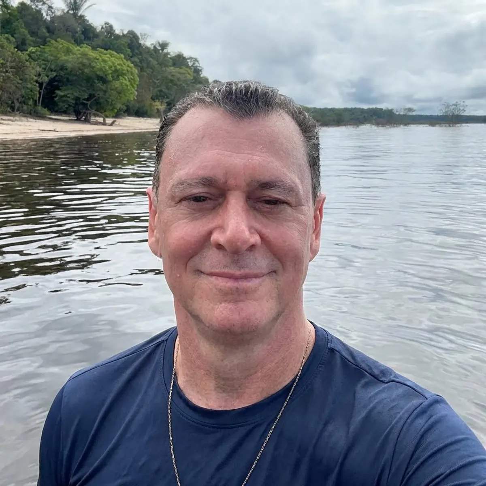
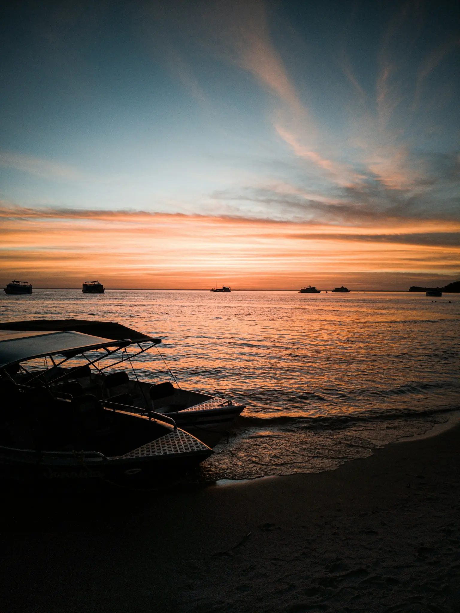

Informe seus contatos para liberar o acesso à sua análise de perspectiva.
Viajante, com base em cada resposta que você forneceu ao longo deste teste, o seu perfil de viajante foi mapeado com sucesso.
Os dados apontam que você faz parte de um grupo seleto de pessoas que já carimbaram o passaporte nos destinos mais conhecidos do mundo, mas que começaram a esbarrar em um teto invisível: a previsibilidade do turismo tradicional. O diagnóstico mostra que o que você busca agora não é apenas mais um hotel de luxo, mas uma quebra de padrão com isolamento e privacidade absoluta.
Mudar a geografia superficial não resolve o cansaço estrutural da rotina. Veja o contraste:
Indicadores Estratégicos do Seu Perfil
Quem Desenha Essa Rota

Meu nome é Ademar Bueno. Há quatro décadas eu atuo na curadoria de grandes expedições na Amazônia profunda. Com formação pela FGV, MBA em Harvard e atuação direta com grandes lideranças corporativas, eu me especializei em construir experiências de imersão que servem como verdadeiros pontos de virada para quem toma decisões de alto impacto. Eu não desenho passeios; eu abro as portas de territórios intocados com o máximo de sofisticação privada.
Como funciona a dinâmica de imersão a bordo do Green Boat:

Passo 1 → Desconexão Controlada
Você deixa os cenários previsíveis para trás e entra em uma rota restrita pelas águas cristalinas e praias de areia branca do Rio Tapajós.
Passo 2 → Estrutura Boutique Privada
Dias de navegação em um barco de apenas 8 suítes impecáveis, projetado estritamente para garantir privacidade, alta gastronomia e conforto absoluto.
Passo 3 → Resgate de Perspectiva
Vivências exclusivas na floresta e contato com a pureza de um ecossistema sem estradas, desenhado para resetar o piloto automático da mente.
Ao ser selecionado para a próxima rota exclusiva em Alter do Chão, você acessa:
Navegação Premium Privada: Dias a bordo de um barco boutique com suítes exclusivas.
Isolamento de Elite: Acesso a praias paradisíacas e canais de rios intocados pelo turismo de massa.
Curadoria de Rota: Roteiro interpretativo sênior desenhado para garantir o máximo de privacidade.
O Green Boat opera com saídas rigidamente restritas ao longo de 2026. Devido ao nosso compromisso com o impacto ambiental mínimo e com a exclusividade total da experiência, a capacidade do barco é limitada a apenas 16 vagas por expedição. As vagas não são abertas ao público geral; elas são destinadas apenas a perfis selecionados que buscam o verdadeiro ineditismo.
O envio dos seus dados através deste quiz garante a prioridade do seu perfil na nossa lista de triagem interna. Nossa equipe de curadoria entrará em contato para entender se o seu momento atual está alinhado com o propósito e o nível de isolamento que a rota de Alter do Chão oferece.
Viajante, o piloto automático vai tentar fazer você planejar a mesma viagem internacional previsível de sempre. Mas a clareza que você quer exige um cenário inédito.
O seu diagnóstico de rota foi validado e o leito ideal para Alter do Chão está disponível. O próximo passo está na sua mão.